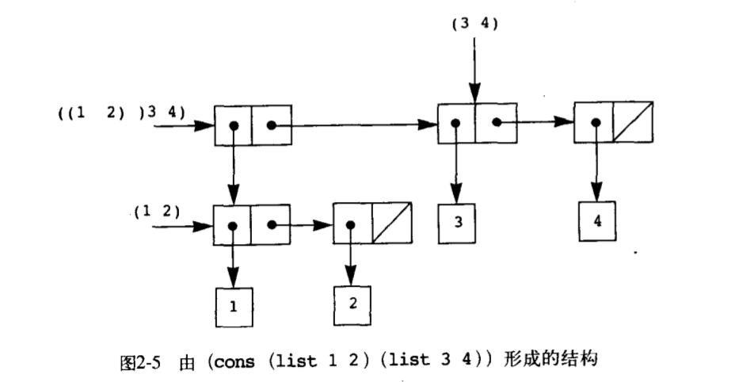
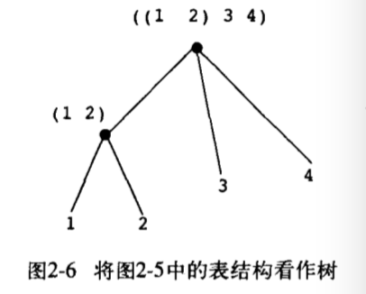

构造函数：构造复合对象 选择函数：提取复合对象中的元素
(wishful thinking~ George’s job hahaha) cons: 取两个参数，返回一个包含这个两个参数作为其成分的复合数据对象。 car: 提取复合对象的第一部分 cdr: 提取复合对象的剩余部分 从序对构造起来的数据对象称为表数据结构
使用procedure就可以实现序对
(define (cons x y)
(define (dispatch m)
(cond ((= m 0) x)
((= m 1) y)
(else (error "Argument not 0 or 1 -- CONS" m))))
dispatch)
(define (car z) (z 0))
(define (cdr z) (z 1))
另一种实现
(define (cons x y) (lambda (m) (m x y))) (define (car z) (z (lambda (p q) p))) (define (cdr z) (z (lambda (p q) q)))
调用的具体过程
(car (cons 1 2)) (car (lambda(m)(m 1 2))) ((lambda(m)(m 1 2)(lambda(p q) p))) ((lambda(p q) p) 1 2) ((lambda(1 2) 1)) 1
数据的过程性表示，有关的程序设计风格通常称为消息传递
某种组合数据对象的操作满足闭包性质，意思是，通过它组合起数据对象得到的结果本身还可以通过同样的操作再进行组合。（抽象代数中，某一集合的元素在某个运算下封闭，是指如果将该运算应用于这一集合的元素，产生出的仍然是该集合里的元素） 闭包性质使我们能够建立起层次性的结构。
语法糖list (list <a1> <a2> … <an>) 等价于 (cons <a1> (cons <a2> (cons … (cons <a_n> nil) …))) 其中nil表明序列的结束
(define (map proc items)
(if (null? items)
nil
(cons (proc (car items))
(map (proc (cdr items))))))
元素本身是序列的序列，可以看作树，序列里的元素就是树的分支  